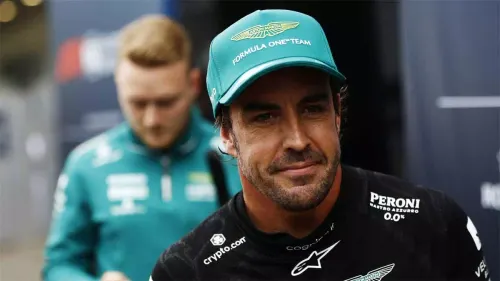
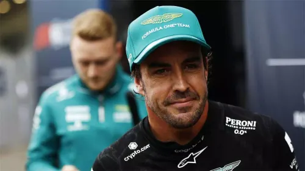

Qui sóc?
Hola! Sóc en Hugo Carrasco Castro, estudiant de primer de DAM, un cicle superior. Estudio a l'Escola Pia de Mataró. Els meus pasatemps favorit es jugar videojocs i jugar musica, tinc 17 anys encara que aquet Decembre faré els 18!
Si vols saber una mica mes dels meus gustos musicals pots visitar el meu spotify:
El meu esport favorit es la Formula 1, un deport ple d'emocions i adrenalina que em posa els pèls de punta. El meu pilot favorit es "El nano" o "Fernando Alonso"
 
